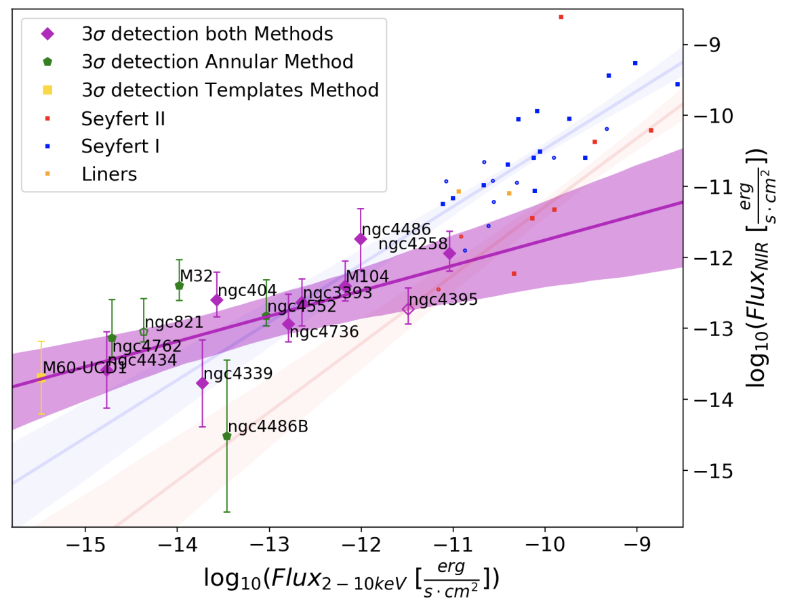

About

Interests:
I am an astrophysicist interested in the central regions of galaxies, the growth and activity of supermassive black holes, and the evolution of galaxies. My work combines observations, data analysis, and computational modelling, with a particular focus on nearby galaxies and low-luminosity active galactic nuclei.
I work with large astronomical datasets, including integral-field spectroscopy from instruments such as JWST/NIRSpec, and develop Python-based tools and analysis techniques to extract physical information from these observations.
Alongside my research, I have worked on scientific software, image analysis, machine learning, and data-processing workflows. I am particularly interested in applying these computational skills beyond astronomy to problems in data science, machine learning, and scientific software development.
Education:
I did my undergrad in Physics Engineering at the University of Santiago in 2015.
In 2016 I joined the graduate program in Physics & Astronomy at the University of Utah where I obtained my master and Ph.D in Phyiscs in 2022. Currently, I work as a postdoctoral researcher at the Galactic Nuclei group at the Max Planck Institut fur Astronomie with by Dr. Nadine Neumayer.
Research & Projects

WiCKED — Wiggle Corrector toolKit for NIRSpEc Data
WiCKED is a Python toolkit I developed to identify and correct sinusoidal, wiggle-like artefacts in JWST/NIRSpec integral-field spectroscopy data.
The software was developed to improve the reliability of spatial and spectral analysis of NIRSpec observations and was applied to the study of galaxy kinematics.
GitHub repository |
Paper
Surprisingly Strong K-band Emission Found in Low-luminosity Active Galactic Nuclei
In this project we study the near-infrared (NIR) emission in 15
local LLAGNs using high resolution NIR Gemini/NIFS Integral Field Unit (IFU) adaptive optics data.
We found an excess of NIR to X-ray emission at low-acreation rates, challenging the standar model of AGN acreation, and encouraging the usage of NIR for AGN tracers
at low-luminosities specially looking at the future with JWST.
Here you can see my
talk,for the SMBH conference in Pucon, Chile in Dec. 2020
and the link to the paper!.

Revealing the accretion history of Centaurus A through its surviving nuclear star clusters
The goal was to identify stripped nuclei in CenA
through dynamical mass measurements of globular clusters (GCs). These measurements can
reveal the presence of SMBHs that are present in stripped nuclei, which are the remnants
of galaxies whose outer parts were stripped through tidal interactions with CenA.
Link to the paper!
Investigating the Dark Matter Halo of NGC 5128 using a Discrete Dynamical Model
Link to the paper!
Contact
Email:
dumont@mpia.de
Address:
Königstuhl 17, 69117 Heidelberg